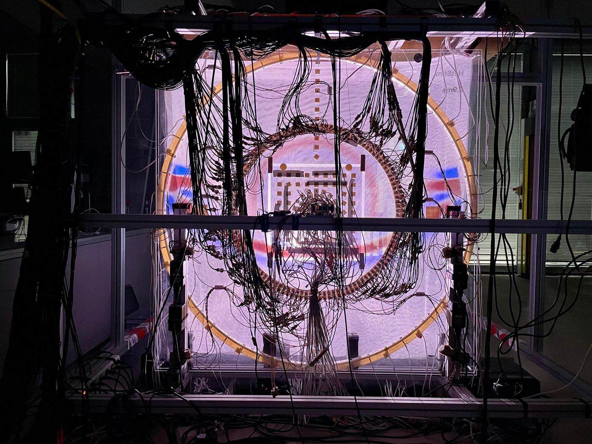

Acoustic Cloning
This page centers on our experimental paper, published in Physical Review Applied 20, 064014 (2023). It is freely available from the ETH Research Collection and as a preprint on arXiv. An easy-to-read article is the APS Physics "Focus" article.
In short
A scatterer changes a sound field in a way that is entirely described by its scattering response. Measure that response and the scattering can be recreated without the object: a ring of loudspeakers in empty space, driven from what a ring of microphones hears, radiates what the object would have radiated. The paper demonstrates this in an experiment in a waveguide. There, every recording is dominated by the walls, and multidimensional deconvolution removes them using nothing but the recordings themselves.

Numerical companion
The paper reports an experiment only. The films below are separate, purely numerical material, shown as an additional resource: simulated acoustic wave fields for the same 2D waveguide as in the paper, where in each film different Green's functions are used to extrapolate the wave field. Nothing shown in them is a measurement.
The experimental data behind the paper are available in the Zenodo repository (doi:10.5281/zenodo.16880576).
The paper was funded by the Swiss National Science Foundation (grant 197182).
How to cite
BibTeX for the paper and for its experimental data on Zenodo. Clicking a block selects it, ready to copy.
@article{Muller2023_acoustic_cloning,
author = {M{\"u}ller, Jonas and Becker, Theodor S. and Li, Xun and
Aichele, Johannes and Serra-Garcia, Marc and
Robertsson, Johan O. A. and van Manen, Dirk-Jan},
title = {Acoustic cloning},
journal = {Physical Review Applied},
volume = {20},
number = {6},
pages = {064014},
year = {2023},
doi = {10.1103/PhysRevApplied.20.064014}
}
@misc{Muller2025_acoustic_cloning_data,
author = {M{\"u}ller, Jonas},
title = {Acoustic Cloning},
year = {2025},
publisher = {Zenodo},
doi = {10.5281/zenodo.16880576},
url = {https://doi.org/10.5281/zenodo.16880576},
note = {Dataset}
}